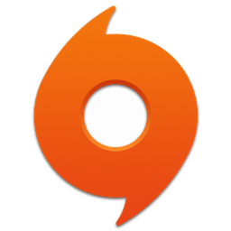
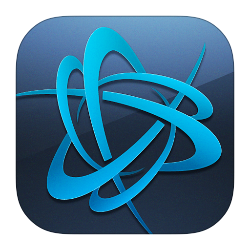
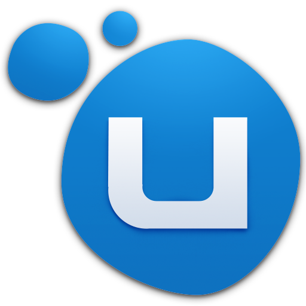

The Launchers
In order to run and to buy different games of the various studios one of the following programmes is needed.
The most used ones are:
Steam

Steam is a launcher run by Valve which is a game studio run by Gabe Newell, but is focused on making money to sell games from other studios. So far, they have rarely developed games. The latest project was Artifact. Steam does not only launch the games; it also provides a shop, a market, a community page, friendslist, and mod support.
Origin
Origin is an online gaming, digital distribution and digital rights management (DRM) platform developed by Electronic Arts that allows users to purchase games for PC and mobile platforms. Origin contains social features such as profile management, networking with friends via chat and direct game joining along with an in-game overlay, streaming via TwitchTV and sharing of game library and community integration with networking sites.
Battle.net
Battle.net is one of the most used launcher since it includes the legendary mmorpg World of Warcraft, and the new competitive fps Overwatch. It is run by Blizzard Entertainment which got bought by Activision. Like the other launchers, Battle.net has a shop, only offering their own games. Some of them are Hearthstone, Diablo 3, Destiny 2 and Starcraft.
Uplay
Uplay is a digital distribution, digital rights management, multiplayer and communications service developed by Massive Entertainment to provide an experience similar to the achievements/trophies offered by various other game companies. The service is provided across various platforms like PC, PlayStation 4, Xbox One, and even Wii U. Uplay is exclusively used by first-party Ubisoft games, and although some third-party titles are sold through the Uplay store, they do not use the Uplay platform. Responses to the platform have been generally negative, with coverage comparing it negatively to its competitors and calling it the worst part of Ubisoft's games.